Brain signals → frozen MusicGen, music by construction.
An EEG window can retrieve the heard song, or steer a frozen MusicGen
at genre level. The hard part is the listener: zero-shot cross-subject song decoding is at chance;
a per-subject fiber estimated from 10 labelled windows lifts it to 45%. The same calibration
unlocks song-level description selection (.350) but not the 12-way genre task
(shared κ .40 vs k-shot .045). The generator's weights are never touched, so every output is,
by construction, a native clip of the original model.
zero-shot cross-subject ≈ chance10 labels → 45% song decodingk-shot: song yes · genre nogenerator weights never touchedcode →
How it works
A CLAP-style two-tower alignment produces the EEG embedding z_win; the same
embedding then drives three downstream tasks: song identification, genre-conditioned generation, and
song-level description selection. This page shows the current version only — every number comes straight
from the result files. All result figures regenerate on CPU
(python code/figures/render_all.py); the system diagram (Fig 0) is hand-supplied.
Fig 0 · system
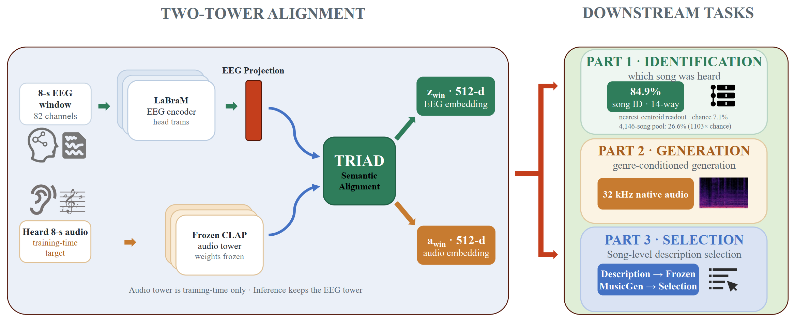
Alignment (training). 8-s EEG → LaBraM backbone → trainable projection head →
z_win; heard audio → frozen CLAP → a_win (training-time only). Both feed
TRIAD (window / second / song). Part 1 · Identification retrieves the heard song from
z_win through the A→L bridge: 84.9% song-level over 36,036 queries and a
1,103-window corpus (held-out segments; subjects remain in training); under subject shift the
calibrated query retrieves real clips at .413 / .504 (bandpower k=10 / 100).
Part 2 · Generation samples a frozen MusicGen at 32 kHz from a genre-conditioned prompt;
it is genre-level by design. Part 3 · Selection picks among 14 song descriptions
(k-shot .350 tag / .201 Qwen); this is text selection, not song-level audio generation.
The diagram shows the frozen-backbone / head variant; the 84.9% number comes from the
main-line arm, which also fine-tunes the LaBraM backbone (7.72M trainable).
Fig 13 · alignment training
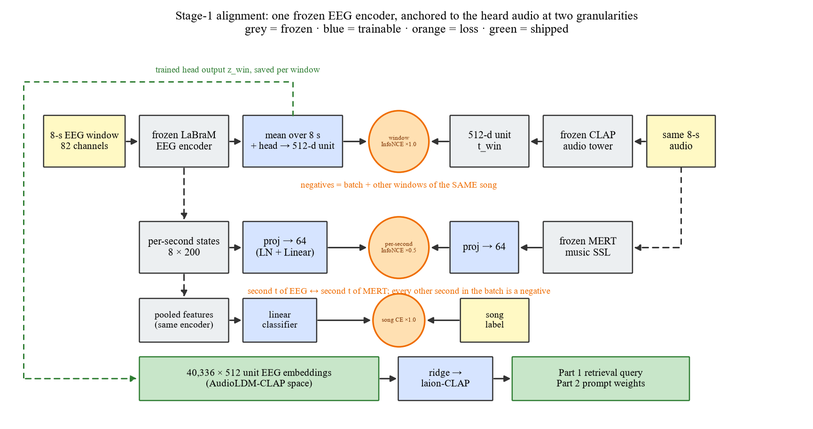
How the alignment is trained: the window vector is pulled to its own audio's CLAP embedding
(×1.0, other windows of the same song as extra negatives), its eight per-second states to MERT's
per-second embeddings (×0.5), and a song-label classifier anchors it (×1.0) — the three terms of
TRIAD. In the frozen-backbone variant shown in Fig 0, only the head, the two 64-d projections and
the classifier train. The 84.9% retrieval result uses the main-line arm, where the LaBraM backbone is
also fine-tuned (7.72M trainable).
The listener is the bottleneck
We varied only the split, keeping the same 8-s windows and representations. Frozen EEG
features decode the heard song at 0.90 within a listener but fall to chance (0.10) on unseen listeners.
A clean subject-held-out retraining reaches 0.106 ± 0.020 (14-way; chance 0.071) across five
folds; a block-split stock control stays at 0.53 on the same T rows. The split, not the
initialization, is the dominant factor.
Fig 14 · information ladder
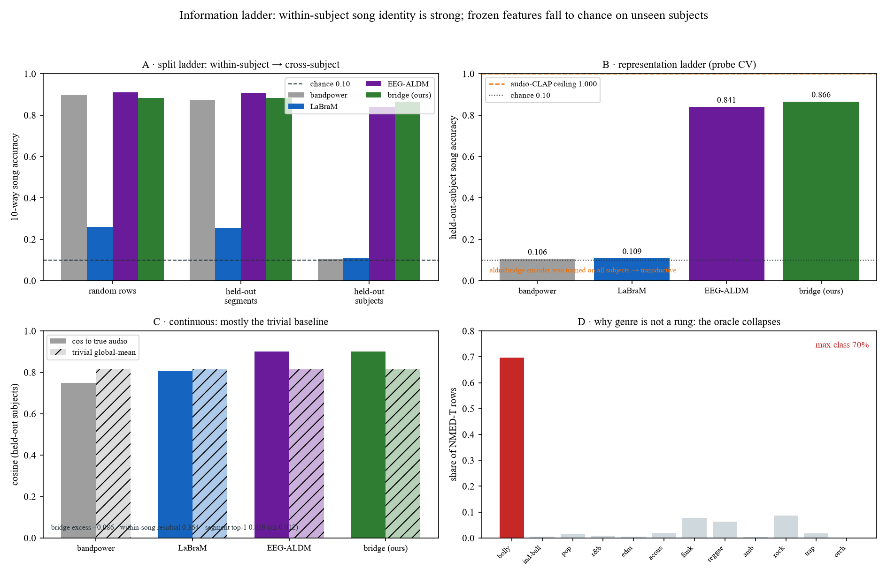
Frozen band-power: 0.896 random-row / 0.873 held-out-segment / 0.106 held-out-subject
(chance 0.10). The trained embedding's 0.84 is transductive: the encoder saw the held-out subjects.
Subject identity is near-saturated (0.997 band-power), so any split that keeps subjects in training
can exploit it.
Fig 16 · the subject fiber
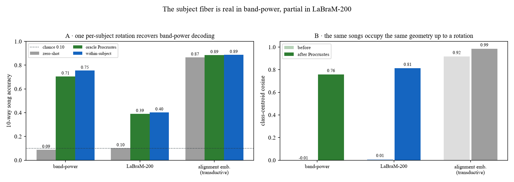
Oracle per-subject orthogonal Procrustes (fit on half of that listener's labelled
windows): cross-subject song decoding 0.089 → 0.706; class-centroid cosine 0.013 → 0.759.
The song information is present but personal.
Fig 15 · k-shot calibration
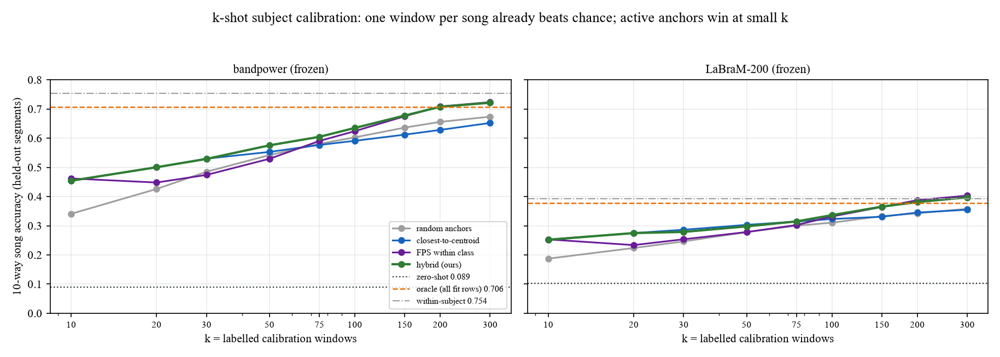
One labelled window per song lifts decoding from 0.09 to 0.454; 100 windows reach
0.635, 300 reach 0.721. Active anchors (codebook coverage + within-class diversity) win at small
k (+0.11 at k=10). The generator is never trained.
Split vs initialization
setting
init
split
14-way (merged)
T rows
mainline
indomain
block
0.7070
0.5873
control
stock
block
0.6686
0.5332
5-fold
stock
held-out subjects
0.106 ± 0.020
0.106
Merged 14-way is inflated by the H rows (subject–song confounded,
saturating at 1.000); the T rows are the honest comparison. On the same T rows the split costs
0.43 and the initialization is worth +0.054.
Adaptation baselines (same split). Unsupervised alignment stays at chance:
per-subject z-score 0.103, Euclidean alignment 0.118, CORAL 0.118. A supervised nearest-centroid probe
needs 100 labels to reach 0.622; the structured fiber calibration reaches 0.454 with 10. The
advantage is sample efficiency at small k — this is not “just fine-tuning”.
What k-shot unlocks — and what it does not
The same per-subject calibration that rescues song decoding does not rescue
genre decoding. Song-level description selection rises from .103 at k=0 to .350 at k=100
(10-way, 5 folds; chance .10, majority floor .119). The 12-way genre task stays with the shared
classifier: κ ≈ .40; k-shot reaches at most κ .045, and matching the Qwen genre prompts
by CLAP scores .056 against a .672 majority floor.
Fig 17 · k-shot: song vs genre
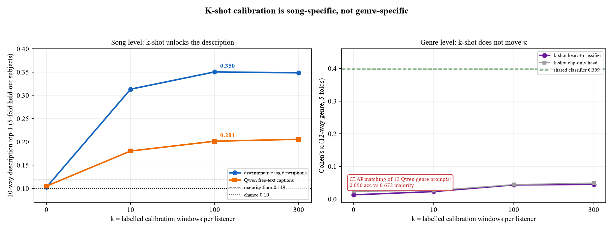
Left: 10-way song-description top-1, 5-fold held-out subjects. Discriminative tag
descriptions (blue) reach .350 with 100 labels; Qwen free-text captions (orange) reach .201 — the
captions are coherent but too generic. Right: 12-way genre selection, Cohen's κ. The shared
classifier is κ .399 (fold mean); k-shot head + classifier (purple) and the clip-only head (grey)
stay at ≤ .045. The CLAP text-prompt selector is below the majority floor (.056 acc vs .672).
Same listener, same calibration budget: one task moves, the other does not.
Why the asymmetry? The subject fiber is a within-listener transform of the
song code; calibrating it adds song identity, not the coarse 12-way genre label. Genre is a
shared interface already handled by the mainline classifier — k-shot should not be used there.
Part 1 — identify the heard song
Song-level nearest-centroid retrieval after the A→L bridge: 36,036 EEG queries over 14 songs
against a 1,103-window audio corpus (chance 7.1%). This headline is segment-held-out (subjects
remain in training); on truly unseen subjects the calibrated query retrieves a real clip at
.413 / .504 (bandpower k=10 / 100) — the honest cross-subject number used in
Three tasks.
Fig 11 · 14-way song confusion
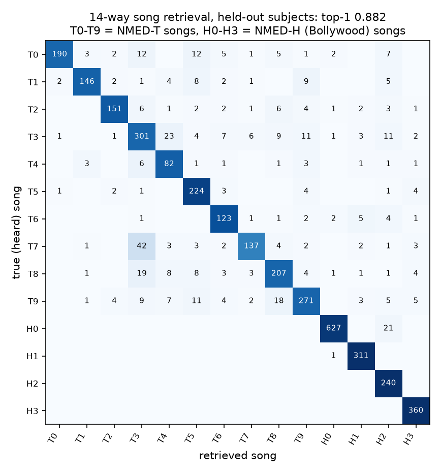
Held-out audio segments (subjects remain in training), 14-way: top-1 88.2%
vs 7.1% chance. This is a different protocol from the headline retrieval line, which scores
84.9% song-level over 36,036 queries (chance 7.1%; smoothed 88.4%). On truly unseen subjects,
the zero-shot retrain is at 0.106 ± 0.020 (5 folds, 14-way; chance 0.071); with per-subject
calibration the query retrieves real clips at .413 / .504 (bandpower k=10 / 100) — see
The listener and Three tasks.
T0–T9 are NMED-T songs, H0–H3 NMED-H.
Fig 9 · pool robustness
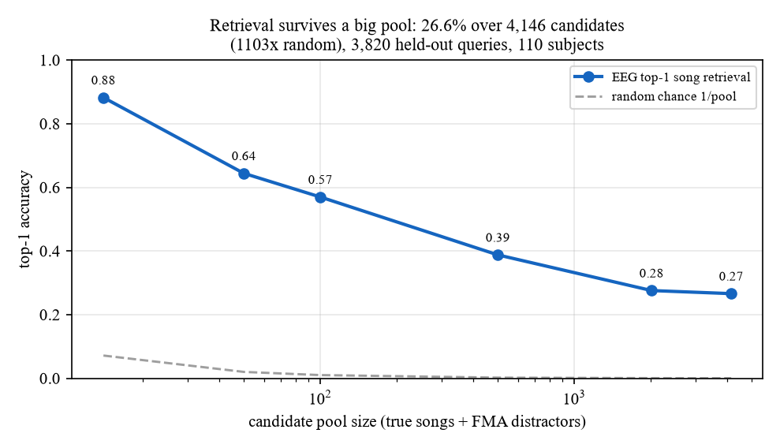
Same readout against a growing FMA distractor pool: 0.882 at 14 candidates →
0.266 at 4,146 (1103× the 1/pool chance).
Part 2 — genre-conditioned generation
Three measurements decide the design: coverage (can a convex mixture of the library
reach real windows), tolerance (is interpolation safe), and which prompt the EEG actually
selects. The generator stays frozen because that keeps every output inside the model's own distribution.
The library is saturated. Expanding the pool from 12 to 22 prompts, or re-selecting
12 from 22 on training songs, does not improve coverage on unseen songs (0.830 vs 0.834 vs 0.825; random
12 = 0.814). The trivial target-mean baseline is 0.815, above the codebook coverage, so only the gap over
the library mean is informative. The bottleneck is upstream, in the listener.
Fig 1 · coverage radius
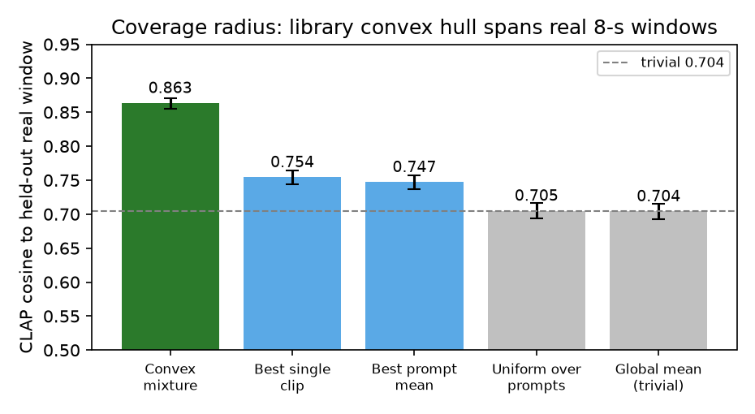
Coverage: a convex mixture over the 72-clip corpus-matched library (12 prompts × 6 clips)
reaches held-out real windows at 0.879 vs 0.730 for the trivial global-mean predictor
(+0.149, t = 20.8, 60/60). Only the gap over trivial counts — absolute cosines are inflated in this space.
Fig 3 · why a corpus-matched library
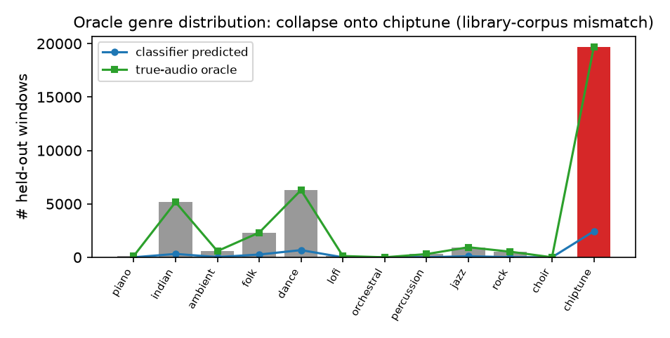
The true-audio genre labels collapse onto chiptune (54.6%) under the original 12 prompts —
an attractor artifact of the library, not of the EEG. Re-labelling to corpus-matched genres removes it
(Bollywood becomes the honest plurality), which is the library used in Figs 1 and 4.
Fig 8 · tolerance map
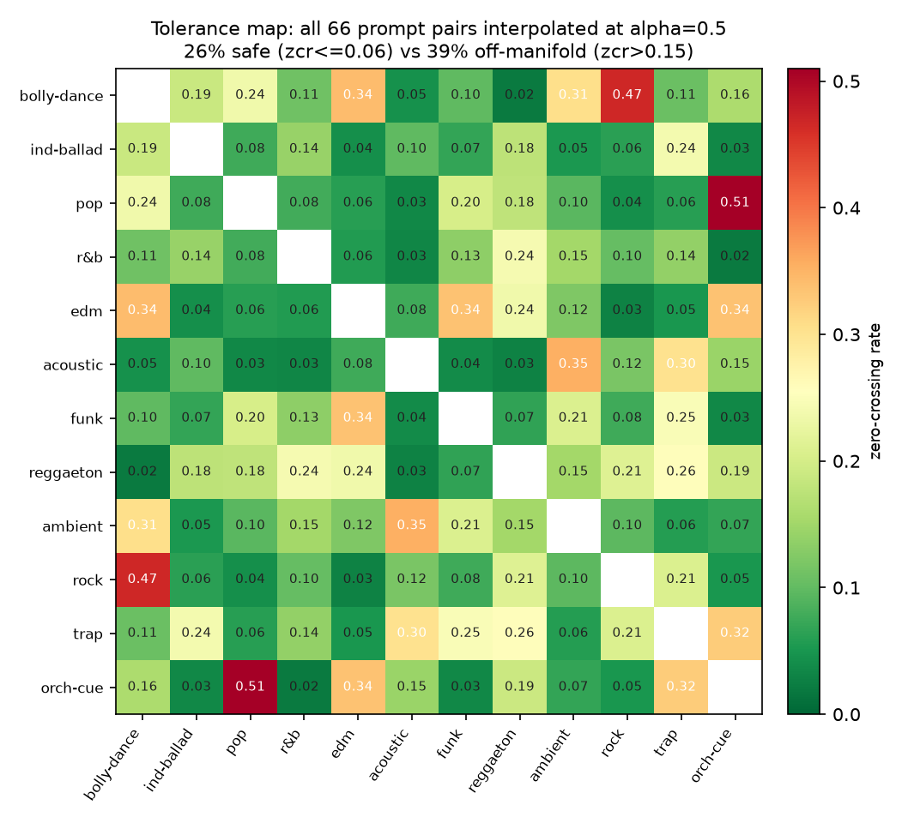
Tolerance: interpolating two prompt embeddings goes off-manifold for
39% of the 66 pairs (zcr > 0.15) — so prompts are picked natively, never interpolated.
Fig 2 · tolerance radius
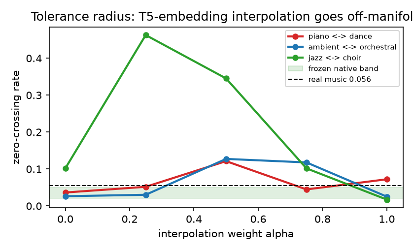
The same effect over the blend weight: jazz↔choir peaks at zcr 0.46 vs 0.056 for real music.
Fig 4 · which prompt the EEG picks
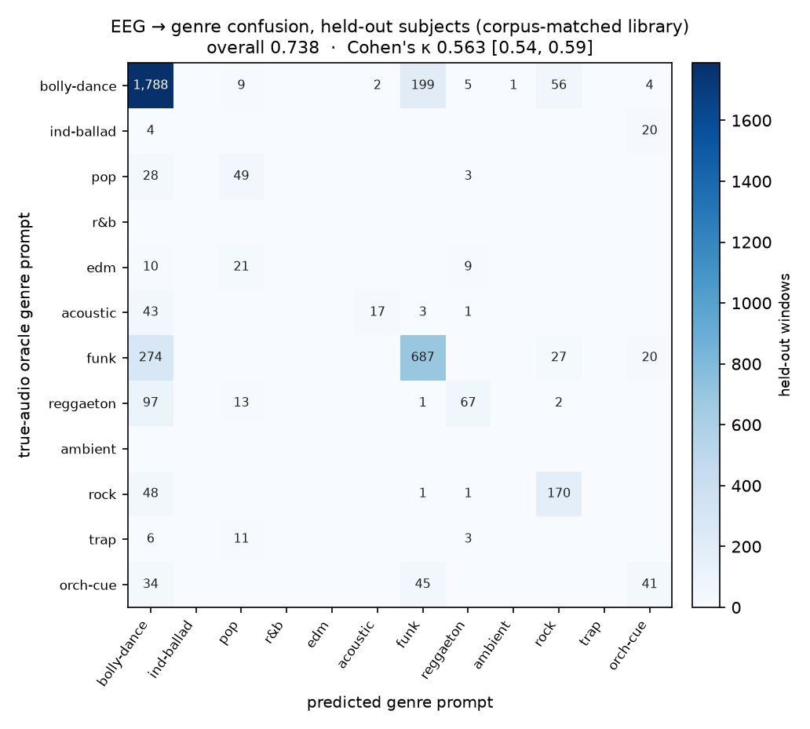
EEG → genre prompt, 5-fold held-out subjects:
overall .748, κ .405 pooled (5-fold mean .742/.399), balanced .283. The shared classifier is the working genre
selector; k-shot does not help the 12-way task (κ ≤ .045; see k-shot).
The majority class is large, so κ is the honest statistic.
Fig 10 · texture: why stay frozen
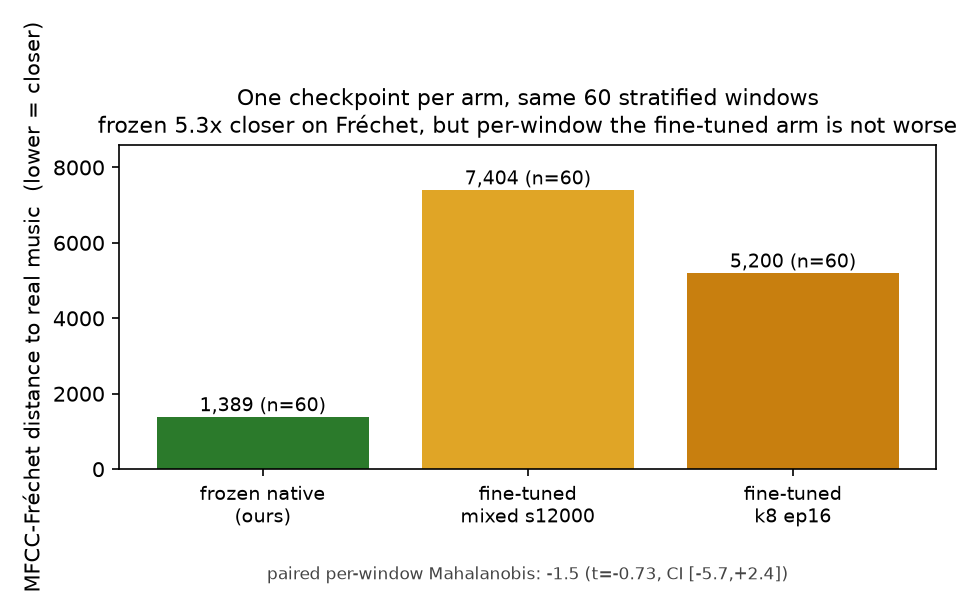
Texture (MFCC-Fréchet to the real windows, one checkpoint per arm, same 60 rows):
frozen 1,389 vs fine-tuned 7,404 / 5,200 (5.3× closer). Per window the order flips
(median Mahalanobis 8.4 frozen vs 6.9 / 7.6, real 4.5): frozen wins distributional texture,
not clip-by-clip realism.
Fig 7 · structure, not noise
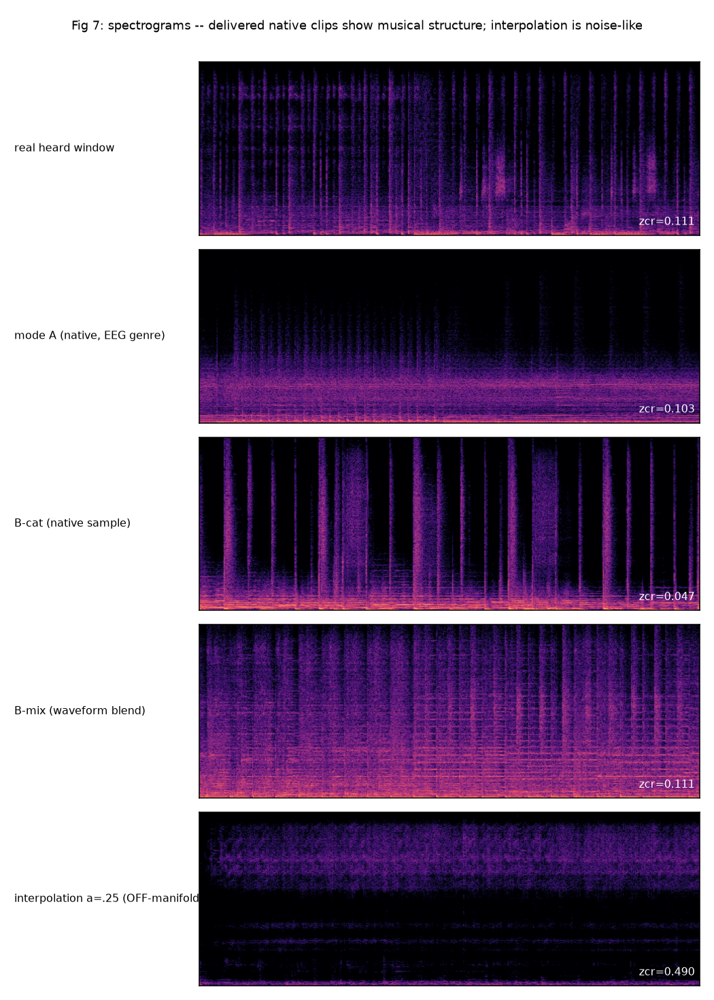
One window (row 1083): the heard stimulus and three delivered native clips show harmonic
structure (zcr 0.031–0.082); the interpolated clip is broadband noise (0.490).
Three downstream tasks
Same listener, same frozen generator, three different tasks. Only song identification
is song-level under subject shift; the second is genre-conditioned generation; the third is a text-level
description selector, not audio generation.
Fig 18 · three downstream tasks
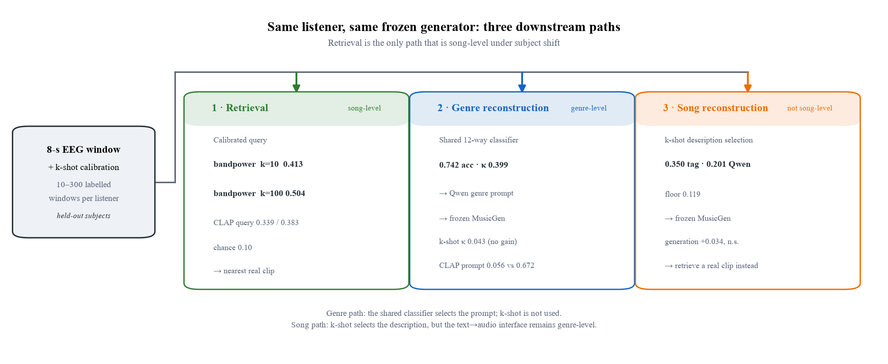
Song identification / retrieval returns a real clip (bandpower k=10 .413, k=100 .504;
through the CLAP query .339/.383; chance .10). Genre-conditioned generation uses the shared
12-way classifier (.742 acc, κ .399; pooled .748/.405) and a Qwen genre prompt; k-shot does not help
(κ ≤ .045) and CLAP prompt matching is below majority (.056 vs .672).
Song-level description selection uses the k-shot selector (.350 tag / .201 Qwen; floor .119),
but the generated audio is still genre-level: the true-song prompt does not beat a same-genre wrong
prompt (+.034, t = 1.02, n.s.). It is not song-level audio generation.
Two retrieval protocols, not one. The 84.9% / 88.2% in Part 1 are
segment-held-out (subjects remain in training). The .413/.504 numbers here are subject-held-out with
per-subject calibration — the honest cross-subject numbers, and the ones used in the three-task
comparison. Only song identification / retrieval closes the song-level gap under subject shift.
Heard vs generated
The heard stimulus (spectrogram only — audio withheld for copyright) next to what the frozen
generator produced from that same window's EEG. 14 rows = 14 distinct source groups, 9 songs, 5 subjects.
Generated clip vs its own stimulus: CLAP cos 0.609 vs 0.506 to the other 13
stimuli (+0.103, t = 3.4, 12/14). Against stimuli sharing the same genre prompt the margin is
−0.005 (t = −0.17) — the match is genre-level, not song-level. Scale: a real window sits
0.897 to its own song's centroid and 0.696 to the others' across the full corpus.
Fig 12 · five of the 14 pairs
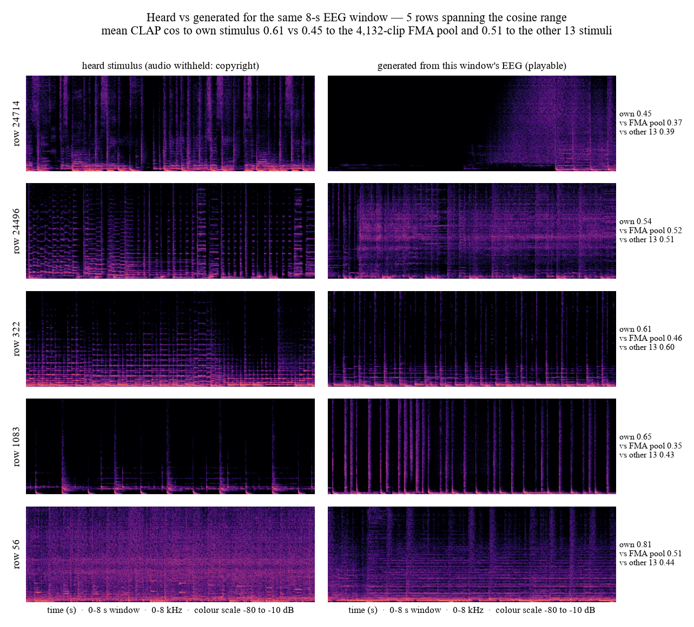
Five of the 14 pairs by cosine rank (min / 25th / 50th / 75th / max). Heard left, generated
right, common colour scale.
window
heard stimulus — spectrogram only
generated from this window's EEG — playable
prompt the EEG selected
CLAP cos: own vs FMA pool
loading assets/pairs.json…
Numbers from
results/stim_vs_gen/cos_matrix.json (code/figures/make_fig_stim_vs_gen.py).
Listen — the prompt library
One native MusicGen sample per genre prompt: the 12 styles the EEG head can select.
Limitations & FAQ
Why is there no stimulus audio?
The stimuli are excerpts of commercially released songs, so only spectrograms are shown and raw EEG is
not published. Every playable file is generated.
Is the generated clip the song that was heard?
No — this is genre-conditioned generation, not the heard song. The generated audio is genre-level
only (+0.103, and −0.005 within the same genre). Song identity is the job of song identification:
84.9% song-level retrieval (held-out segments; subjects remain in training). On truly unseen subjects
the calibrated query retrieves real clips at .413 / .504 (bandpower k=10 / 100; chance .10),
and k-shot song-description selection reaches .350; genre-conditioned generation remains
genre-level.
Why keep the generator frozen?
Fine-tuning scored 7,404 vs 1,389 on distributional texture, and freezing keeps every output inside the
generator's own distribution by construction.
Why not interpolate between two prompts?
39% of the 66 pairs go off-manifold: crackle instead of a blend.
What is still missing?
Song-level generation; a human listening test (MOS); coverage is relative to the trivial baseline,
not absolute. Free-text captions (LP-MusicCaps, Qwen2-Audio) did not beat the discriminative tags for
song selection (.201 vs .350).
Small corpus (14 songs, 68 subjects); genre labels skew, so κ — not accuracy — is the honest statistic.
The five-fold subject-held-out retrain and the block-split control are single-seed; NMED-T has only 20 crossed subjects.
The fiber theory assumes a shared codebook and an isometric/low-rank transform; LaBraM-200 is only partially recoverable (0.391 oracle).
K-shot calibrates song-level description selection (.350), but not the 12-way genre task (κ .045 vs shared .40); calibrated generation remains genre-level.
Song-level audio generation is not solved: the generated audio is genre-level; the working song-level tasks are description selection (.350) and retrieval of real clips (.38–.50).
Free-text Qwen song captions are coherent but generic (.201 vs .350 tags); no title/artist leakage, but the text→audio interface still collapses song identity to genre.
The FMA-pool margin measures pull toward this corpus, not song identity (Bollywood stimuli vs a mostly-Western pool).
Off-manifold interpolation makes the mixture effectively near-single-prompt, or waveform blending.
No metric replaces listening; MOS has not been run.
Conditioning is genre-level by design, so song identity is out of reach for the generation arm.